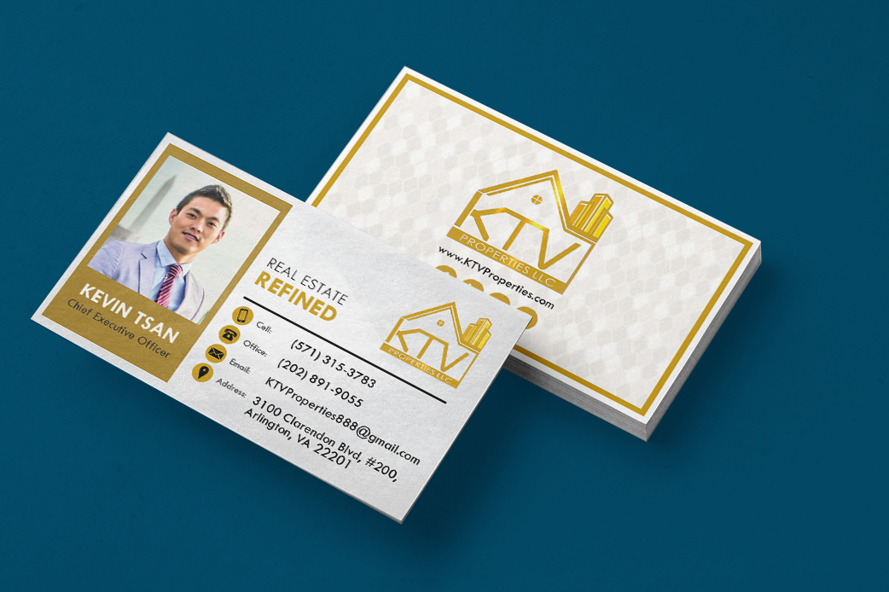

Work
Explore my work by discipline. Each collection brings together projects from different roles, clients and stages of my career.

01
Branding + Identity
Logo systems, visual identities and brand applications designed to stay recognizable across different formats and environments.
View collection
02
Web + UI/UX
Responsive websites and interfaces built around clear hierarchy, accessibility and the way people actually move through information.
View collection
03
Marketing + Campaigns
Campaign systems, promotional materials and coordinated visual assets created to carry one message across multiple touchpoints.
View collection
04
Information Design
Infographics, data-driven visuals and structured content that make dense or complicated information easier to understand.
View collection05
Motion + Video
Animated, instructional and multimedia work that uses timing, movement and sequencing when a static design is not enough.
View collection
06
Photography + Fine Art
Photography and personal visual work that sits outside traditional client deliverables while still informing how I see composition, color and detail.
View collection